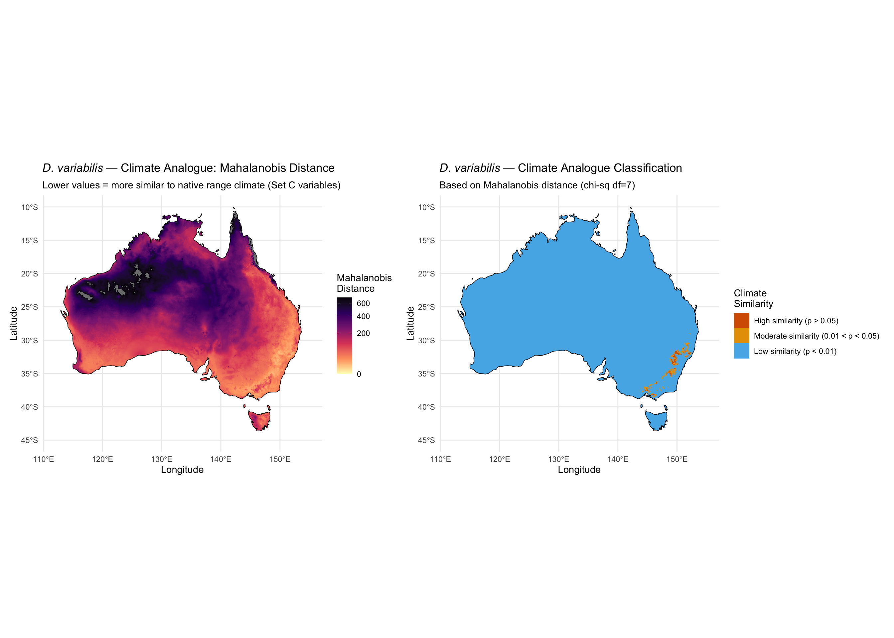

library(tidyverse)
library(terra)
library(sf)
library(rnaturalearth)
library(rnaturalearthdata)Step 10: Climate Analogue Mapping
Dermacentor variabilis Species Distribution Model
Overview
This script provides a model-free assessment of climatic similarity between the D. variabilis native range and Australia. Instead of fitting a correlative model, we directly compute the Mahalanobis distance from each Australian cell to the climatic centroid of the native range, using only ecologically appropriate variables (moisture and warm-season temperature — Set C).
This approach:
- Avoids extrapolation artefacts inherent in correlative SDMs
- Is not sensitive to model algorithm choice (MaxEnt vs BRT)
- Provides an independent validation for SDM predictions
- Can be directly compared with CLIMEX Ecoclimatic Index
1. Load data
base_dir <- "~/Library/CloudStorage/OneDrive-CSIRO/OneDrive - Docs/01_Projects/SDM/Dvariabilis_SDM"
processed_dir <- file.path(base_dir, "processed_data")
figures_dir <- file.path(base_dir, "figures")
# Full environmental stacks
env_stack_aus <- rast(file.path(processed_dir, "env_stack_aus.tif"))
# Occurrence data (contains all 21 variables)
occ_env <- readRDS(file.path(processed_dir, "occurrences_with_env.rds"))
# Moisture-focused variables (Set C)
set_C_file <- file.path(processed_dir, "selected_variables_setC.txt")
if (file.exists(set_C_file)) {
set_C <- readLines(set_C_file)
} else {
set_C <- c("bio5", "bio10", "bio12", "bio15",
"aridity_idx", "PET_seasonality", "vpd_annual")
set_C <- intersect(set_C, names(env_stack_aus))
}
aus <- ne_countries(country = "Australia", scale = "medium", returnclass = "sf")
cat("Climate analogue variables:", paste(set_C, collapse = ", "), "\n")Climate analogue variables: bio5, bio10, bio12, bio15, aridity_idx, PET_seasonality, vpd_annual 2. Characterise native range climate
# Extract environmental values at occurrence points
occ_climate <- occ_env %>%
dplyr::select(all_of(set_C)) %>%
na.omit()
# Core climate envelope (10th-90th percentile)
core_envelope <- tibble()
for (v in set_C) {
core_envelope <- bind_rows(core_envelope, tibble(
variable = v,
q10 = quantile(occ_climate[[v]], 0.10),
q50 = quantile(occ_climate[[v]], 0.50),
q90 = quantile(occ_climate[[v]], 0.90),
mean = mean(occ_climate[[v]]),
sd = sd(occ_climate[[v]])
))
}
cat("Native range core climate envelope (10th-90th percentile):\n")
print(core_envelope, n = Inf)
# Scale statistics derived from occurrence data
# Used to normalise both occurrence data and Australian cells to unit variance
# before computing Mahalanobis distance.
# Rationale: variables in this set span very different scales (e.g. bio12 mean
# diurnal range SD ≈ 1.3°C vs PET_seasonality SD ≈ 479). Without scaling, low-SD
# variables dominate the Mahalanobis metric regardless of ecological relevance.
# Scaling to unit variance (using occurrence SD) is equivalent to using the
# correlation matrix, giving equal weight per standardised unit of deviation.
occ_scale_center <- colMeans(occ_climate)
occ_scale_sd <- apply(occ_climate, 2, sd)
cat("\nNative range centroid (unscaled):\n")
print(round(occ_scale_center, 2))
cat("\nPer-variable SD (used for scaling):\n")
print(round(occ_scale_sd, 2))
# Scale occurrence data to zero mean, unit variance
occ_scaled <- scale(occ_climate, center = occ_scale_center, scale = occ_scale_sd)
# Covariance matrix and centroid on SCALED data
cov_matrix <- cov(occ_scaled)
centroid <- colMeans(occ_scaled)Native range core climate envelope (10th-90th percentile):
# A tibble: 7 × 6
variable q10 q50 q90 mean sd
<chr> <dbl> <dbl> <dbl> <dbl> <dbl>
1 bio5 92 111 141 114. 22.1
2 bio10 231 293 336 291. 54.6
3 bio12 9.99 11.8 13.1 11.7 1.28
4 bio15 25.2 28.7 32.6 28.9 2.85
5 aridity_idx 22.8 30.9 41.6 31.9 8.86
6 PET_seasonality 4930. 5510. 5973. 5459. 479.
7 vpd_annual 445. 613. 862. 645. 169.
Native range centroid (unscaled):
bio5 bio10 bio12 bio15 aridity_idx
114.37 291.20 11.72 28.88 31.90
PET_seasonality vpd_annual
5458.68 645.17
Per-variable SD (used for scaling):
bio5 bio10 bio12 bio15 aridity_idx
22.05 54.60 1.28 2.85 8.86
PET_seasonality vpd_annual
478.62 169.18 3. Compute Mahalanobis distance across Australia
# Subset Australian stack to Set C variables
env_aus_C <- env_stack_aus[[set_C]]
# Extract all Australian cell values
aus_vals <- as.data.frame(env_aus_C, xy = TRUE, na.rm = TRUE)
aus_env <- aus_vals %>% dplyr::select(all_of(set_C))
# Scale Australian cells using the SAME center and SD as the occurrence data
# This ensures distances are expressed in units of the native range SD
aus_scaled <- scale(aus_env, center = occ_scale_center, scale = occ_scale_sd)
# Compute Mahalanobis distance from each scaled cell to the scaled centroid
# Both aus_scaled and centroid are now on the same standardised scale
mah_dist <- mahalanobis(aus_scaled, center = centroid, cov = cov_matrix)
# Add to data frame
aus_vals$mahal_dist <- mah_dist
# Convert to raster
mah_rast <- rast(aus_vals %>% dplyr::select(x, y, mahal_dist),
type = "xyz", crs = "EPSG:4326")
# Chi-squared threshold for outlier detection (df = number of variables)
chi_sq_95 <- qchisq(0.95, df = length(set_C))
chi_sq_99 <- qchisq(0.99, df = length(set_C))
# Climate analogue classification
aus_vals$analogue_class <- case_when(
aus_vals$mahal_dist <= chi_sq_95 ~ "High similarity (p > 0.05)",
aus_vals$mahal_dist <= chi_sq_99 ~ "Moderate similarity (0.01 < p < 0.05)",
TRUE ~ "Low similarity (p < 0.01)"
)
cat("Mahalanobis distance summary:\n")
sprintf(" Range: %.1f to %.1f", min(mah_dist), max(mah_dist))
sprintf(" Chi-sq 95th percentile (df=%d): %.1f", length(set_C), chi_sq_95)
sprintf(" Chi-sq 99th percentile (df=%d): %.1f", length(set_C), chi_sq_99)
n_total <- nrow(aus_vals)
sprintf(" High similarity (Mah <= %.1f): %.1f%%",
chi_sq_95, 100 * sum(mah_dist <= chi_sq_95) / n_total)
sprintf(" Moderate similarity: %.1f%%",
100 * sum(mah_dist > chi_sq_95 & mah_dist <= chi_sq_99) / n_total)
sprintf(" Low similarity (Mah > %.1f): %.1f%%",
chi_sq_99, 100 * sum(mah_dist > chi_sq_99) / n_total)Mahalanobis distance summary:
[1] " Range: 7.6 to 4333.6"
[1] " Chi-sq 95th percentile (df=7): 14.1"
[1] " Chi-sq 99th percentile (df=7): 18.5"
[1] " High similarity (Mah <= 14.1): 0.2%"
[1] " Moderate similarity: 0.6%"
[1] " Low similarity (Mah > 18.5): 99.1%"4. Climate analogue maps
# Continuous Mahalanobis distance map
p1 <- ggplot() +
geom_raster(data = aus_vals, aes(x = x, y = y, fill = mahal_dist)) +
geom_sf(data = aus, fill = NA, colour = "black", linewidth = 0.3) +
scale_fill_viridis_c(
name = "Mahalanobis\nDistance",
option = "magma",
direction = -1,
trans = "sqrt",
limits = c(0, quantile(mah_dist, 0.99))
) +
labs(
title = expression(italic("D. variabilis") ~ "— Climate Analogue: Mahalanobis Distance"),
subtitle = "Lower values = more similar to native range climate (Set C variables)",
x = "Longitude", y = "Latitude"
) +
theme_minimal(base_size = 11) +
coord_sf(xlim = c(112, 155), ylim = c(-45, -10))
# Categorical analogue map
aus_vals$analogue_class <- factor(
aus_vals$analogue_class,
levels = c("High similarity (p > 0.05)",
"Moderate similarity (0.01 < p < 0.05)",
"Low similarity (p < 0.01)")
)
p2 <- ggplot() +
geom_raster(data = aus_vals, aes(x = x, y = y, fill = analogue_class)) +
geom_sf(data = aus, fill = NA, colour = "black", linewidth = 0.3) +
scale_fill_manual(
values = c("High similarity (p > 0.05)" = "#D55E00",
"Moderate similarity (0.01 < p < 0.05)" = "#E69F00",
"Low similarity (p < 0.01)" = "#56B4E9"),
name = "Climate\nSimilarity"
) +
labs(
title = expression(italic("D. variabilis") ~ "— Climate Analogue Classification"),
subtitle = sprintf("Based on Mahalanobis distance (chi-sq df=%d)", length(set_C)),
x = "Longitude", y = "Latitude"
) +
theme_minimal(base_size = 11) +
coord_sf(xlim = c(112, 155), ylim = c(-45, -10))
library(patchwork)
p_combined <- p1 + p2 + plot_layout(ncol = 2)
print(p_combined)
ggsave(file.path(figures_dir, "10_climate_analogue.png"),
p_combined, width = 14, height = 6, dpi = 300)5. CLIMEX reference location comparison
# Key locations from Halliday & Sutherst (1990)
ref_locs <- tibble(
city = c("Innisfail", "Lismore", "Sydney", "Melbourne", "Perth",
"Darwin", "Alice Springs", "Hobart", "Brisbane", "Cairns"),
lon = c(146.03, 153.28, 151.21, 144.96, 115.86,
130.84, 133.88, 147.33, 153.03, 145.77),
lat = c(-17.53, -28.81, -33.87, -37.81, -31.95,
-12.46, -23.70, -42.88, -27.47, -16.92),
climex_EI = c(63, 43, NA, NA, NA, NA, NA, NA, NA, NA),
climex_note = c("Highest EI", "~ Little Rock AR (EI=44)",
"", "", "Dry", "Tropical", "Arid",
"Cool temperate", "", "Tropical")
)
# Extract Mahalanobis distance at reference locations
ref_pts <- vect(ref_locs, geom = c("lon", "lat"), crs = "EPSG:4326")
ref_locs$mahal_dist <- extract(mah_rast, ref_pts)[, 2]
ref_locs$p_value <- 1 - pchisq(ref_locs$mahal_dist, df = length(set_C))
cat("CLIMEX reference locations — Mahalanobis distance:\n")
ref_locs %>%
mutate(mahal_dist = round(mahal_dist, 1),
p_value = round(p_value, 4)) %>%
print(n = Inf)
cat("\nInterpretation:\n")
cat("Locations with p > 0.05 have climate within the 95% confidence envelope\n")
cat("of the native range. Compare with CLIMEX EI: higher EI = more suitable.\n")CLIMEX reference locations — Mahalanobis distance:
# A tibble: 10 × 7
city lon lat climex_EI climex_note mahal_dist p_value
<chr> <dbl> <dbl> <dbl> <chr> <dbl> <dbl>
1 Innisfail 146. -17.5 63 "Highest EI" 1709. 0
2 Lismore 153. -28.8 43 "~ Little Rock AR (EI… 44.7 0
3 Sydney 151. -33.9 NA "" 51.4 0
4 Melbourne 145. -37.8 NA "" 33.5 0
5 Perth 116. -32.0 NA "Dry" 130. 0
6 Darwin 131. -12.5 NA "Tropical" NA NA
7 Alice Springs 134. -23.7 NA "Arid" 304. 0
8 Hobart 147. -42.9 NA "Cool temperate" 79.9 0
9 Brisbane 153. -27.5 NA "" 51.2 0
10 Cairns 146. -16.9 NA "Tropical" 1031. 0
Interpretation:
Locations with p > 0.05 have climate within the 95% confidence envelope
of the native range. Compare with CLIMEX EI: higher EI = more suitable.6. Calculate analogue area
# Convert to raster for area calculation
analogue_binary <- mah_rast <= chi_sq_95
cell_areas <- cellSize(analogue_binary, unit = "km")
analogue_area <- sum(values(cell_areas * analogue_binary), na.rm = TRUE)
total_area <- sum(values(cell_areas * !is.na(analogue_binary)), na.rm = TRUE)
sprintf("Climate analogue area (Mahalanobis, 95%% CI): %.0f km2 (%.1f%% of Australia)",
analogue_area, 100 * analogue_area / total_area)[1] "Climate analogue area (Mahalanobis, 95% CI): 16412 km2 (0.2% of Australia)"7. Summary
cat("======================================================\n")
cat(" CLIMATE ANALOGUE ANALYSIS SUMMARY\n")
cat("======================================================\n\n")
cat("Method: Mahalanobis distance from Australian cells to native-range centroid\n")
cat(sprintf("Variables (Set C): %s\n", paste(set_C, collapse = ", ")))
cat(sprintf("Number of occurrence points: %d\n\n", nrow(occ_climate)))
cat("Results:\n")
sprintf(" High similarity area: %.0f km2 (%.1f%%)",
analogue_area, 100 * analogue_area / total_area)
sprintf(" This represents the area where Australian climate falls within")
sprintf(" the 95%% confidence envelope of the native range climate.\n")
cat("\nKey advantage over correlative SDMs:\n")
cat(" - No extrapolation artefacts\n")
cat(" - Not sensitive to model algorithm choice\n")
cat(" - Uses ecologically appropriate variables only\n")
cat(" - Accounts for covariance structure among variables\n")
# Save outputs
writeRaster(mah_rast, file.path(processed_dir, "mahalanobis_distance_aus.tif"),
overwrite = TRUE)
write_csv(ref_locs, file.path(processed_dir, "climate_analogue_reference_locations.csv"))
sprintf("Saved climate analogue outputs")======================================================
CLIMATE ANALOGUE ANALYSIS SUMMARY
======================================================
Method: Mahalanobis distance from Australian cells to native-range centroid
Variables (Set C): bio5, bio10, bio12, bio15, aridity_idx, PET_seasonality, vpd_annual
Number of occurrence points: 4580
Results:
[1] " High similarity area: 16412 km2 (0.2%)"
[1] " This represents the area where Australian climate falls within"
[1] " the 95% confidence envelope of the native range climate.\n"
Key advantage over correlative SDMs:
- No extrapolation artefacts
- Not sensitive to model algorithm choice
- Uses ecologically appropriate variables only
- Accounts for covariance structure among variables
[1] "Saved climate analogue outputs"